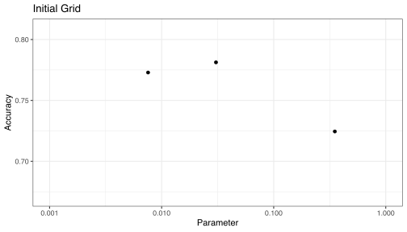
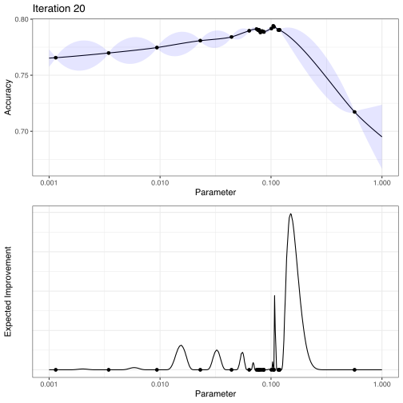

Acquisition functions are mathematical techniques that guide how the parameter space should be explored during Bayesian optimization. They use the predicted mean and predicted variance generated by the Gaussian process model. For a set of such predictions on a set of candidate parameter sets, an acquisition functions combines the means and variances into a criterion that will direct the search.
The variance term that is generated by the Gaussian process model usually reflects the spatial aspects of the data. Candidate sets with high variance are not near any existing parameter values (i.e. those that have observed performance estimates). The predicted variance is very close to zero at or very near to an existing result.
There is usually a trade-off between two strategies:
exploitation focuses on results in the vicinity of the current best results by penalizing for higher variance values.
exploration pushes the search towards unexplored regions.
The acquisition functions themselves have quasi-tuning parameters that are usually trade-offs between exploitation and exploration. For example, if the performance measure being used should be maximized (i.e. accuracy, the area under the ROC curve, etc), then one acquisition function would be a lower confidence bound \(L = \mu - C \times \sigma\). The multiplier \(C\) would be used to penalize based on the predicted standard error (\(\sigma\)) of different parameter combinations. Note that the acquisition function is not the performance measure, but a function of what metric is used to evaluate the model.
One of the most common acquisition functions is the expected improvement. Based on basic probability theory, this can be computed relative to the current estimate of the optimal performance. Suppose that our performance metric should be maximized (e.g. accuracy, area under the ROC curve, etc). For any tuning parameter combination \(\theta\), we have the predicted mean and standard error of that metric (call those \(\mu(\theta)\) and \(\sigma(\theta)\)). From previous data, the best (mean) performance value was \(m_{opt}\)). The expected improvement is determined using:
\[ \begin{align} EI(\theta; m_{opt}) &= \delta(\theta) \Phi\left(\frac{\delta(\theta)}{\sigma(\theta)}\right) + \sigma(\theta) \phi\left(\frac{\delta(\theta)}{\sigma(\theta)}\right) \notag \\ &\text{where} \notag \\ \delta(\theta) &= \mu(\theta) - m_{opt} \notag \end{align} \]
The function \(\Phi(\cdot)\) is the cumulative standard normal and \(\phi(\cdot)\) is the standard normal density.
The value \(\delta(\theta)\) measures how close we are (on average) to the current best performance value1. When new candidate tuning parameters are needed, the space of \(\theta\) is searched for the value that maximizes the expected improvement.
Suppose a single parameter were being optimized and that parameter was represented using a log10 transformation. Using resampling, suppose the accuracy results for three points were evaluated:

In the first iteration of Bayesian optimization, these three data points are given to the Gaussian process model to produce predictions across a wider range of values. The fitted curve (i.e. \(\mu(\theta)\)) is shown on the top panel below, along with approximate 95% credible intervals \(\mu(\theta) \pm 1.96 \sigma(\theta)\):

Notice that the interval width is large in regions far from observed data points.
The bottom panel shows the expected improvement across the range of candidate values. Of the observed points, the expected improvement near the middle point has the largest improvement. This is because the first term in the equation above (with the \(\delta(\theta)\) coefficient) is very large while the second term (with the coefficient \(\sigma(\theta)\) is virtually zero. This focus on the mean portion will keep the search mostly in the region of the best performance.
Using these results, the parameter value with the largest improvement is then evaluated using cross-validation. The GP model is then updated and a new parameter is chosen and so on.
The results at iteration 20 were:

The points shown on the graph indicate that there is a region in the neighborhood of 0.01 that appears to produce the best results, and that the expected improvement function has driven the optimization to focus on this region.
When using expected improvement, the primary method for compromising between exploitation and exploration is the use of a “trade-off” value. This value is the amount of performance (in the original units) that can be sacrificed when computing the improvement. This has the effect of down-playing the contribution of the mean effect in the computations. For a trade-off value \(\tau\), the equation above uses:
\[ \delta(\theta) = \mu(\theta) - m_{opt} - \tau \]
Suppose that we were willing to trade-off \(\tau = 0.05\)% of the predicted accuracy during the search. Using the same three initial results, the procedure would end up in the same general location but would have explored more values across the total range:

There are two main strategies for dynamic trade-offs during the optimization:
Use a function to specify the parameter(s) for the acquisition functions. For expected improvement, this can be done using
exp_improve(trade_off = foo()).foo()should be a function whose first parameter is the current iteration number. Whentuneinvokes this function, only the first argument is used. A good strategy might be to settrade_offto some non-zero value at the start of the search and incrementally approach zero after a reasonable period.control_bayes()has an option for doing an additional uncertainty sample when no improvements have been found. This is a technique from the active learning literature where new data points are sampled that most help the model. In this case, the candidate points are scored only on variance and a candidate is chosen from a set of the most variable design points. This may find a location in the parameter space to help the optimization make improvements.
This equation treats \(m_{opt}\) as if it has no variation and no correlation to \(\mu(\theta)\). Neither of those are true so consider this a “first order approximation” instead of a highly accurate estimate.↩︎